Free
computer Tutorials
|
Free
computer Tutorials
|
|
 HOME HOME
|
|
||||
Microsoft Excel 2007 to 2010Format Axis TitlesFrom the previous lesson, your 2D Excel Line Chart should look like this: 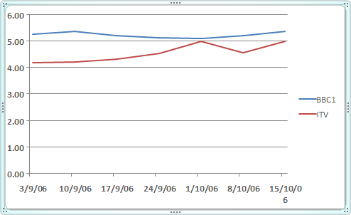 To format the dates on the bottom Axis, click on them with your left mouse button. With the dates Axis selected, right click. You should see this menu: 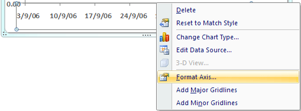 Select Format Axis from the menu, and you'll see the following dialogue box appear: 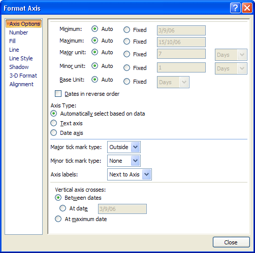 Under Axis Type, select Text Axis: 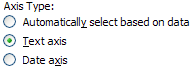 Your dates should end up in the middle. (Our version of Excel was a little buggy. We had to click Date axis, then click back on Text axis to get the dates in the middle.) 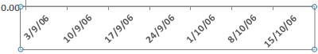
Adding an Axis TitleTo add an Axis label at the top of your chart, click the Layout menu at the top of Excel. Then locate the Labels panel: 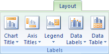 Click on Chart Title. From the menu, select Above Chart: 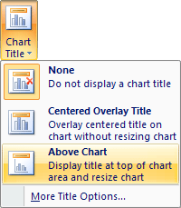 You will then see a default title appear at the top of the chart. Highlight the text, and type a title of your own: 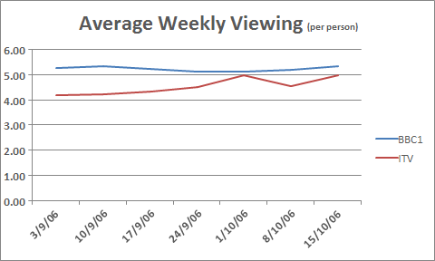 Add a Left AxisWe now need to add an Axis for the numbers running up the left of the chart. The numbers are the hours per week that people watch each channel - 0 to 6. From the Labels menu still, select Axis Titles > Primary Vertical
Axis Title > Rotated Title: 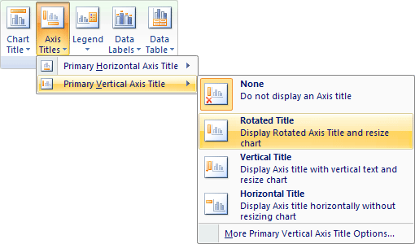 This will add a title like the following one: 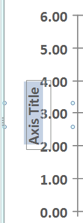 Highlight the default title and type Hours. You can move the title to the left by clicking and dragging. This is a little tricky, though! Use the Zoom tool at the bottom of Excel to zoom in on your target: Move the Axis in to position: 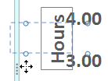 When you're done, your chart should now look like this one: 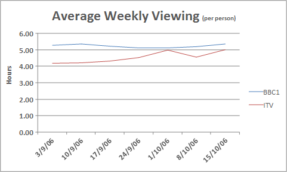 Spruce it up a bit by adding a bit of fill colour, rounded edges, and shadow. You've already done this previously, so we won't go through it again. When you're done, it may look like ours: 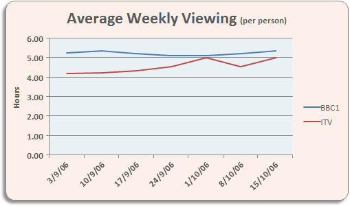 And that's it for line charts. If you've been following along from the beginning, you should now have some impressive Excel chart skills.
In the next part, we'll move on and do some more work on Formulas. |
|||||
|